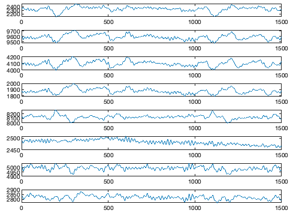
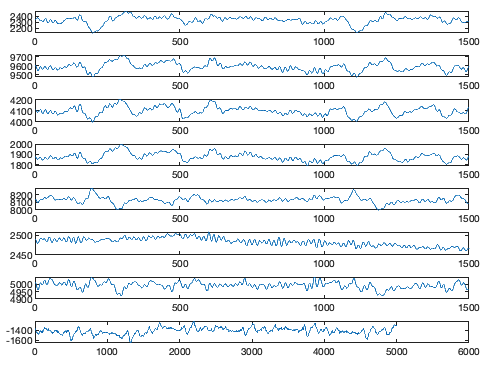
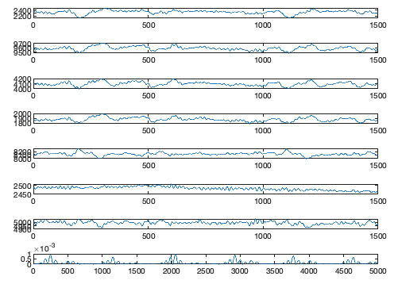
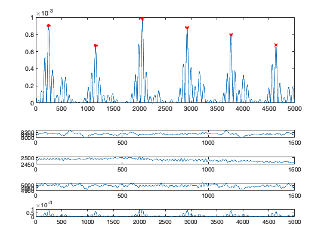
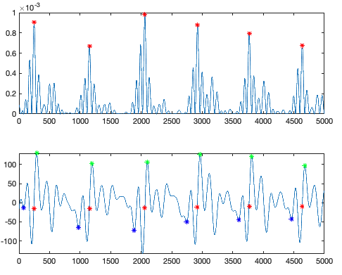
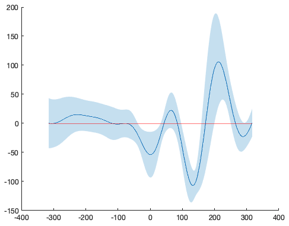
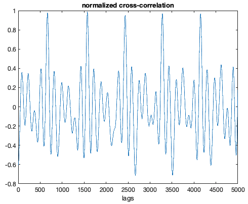
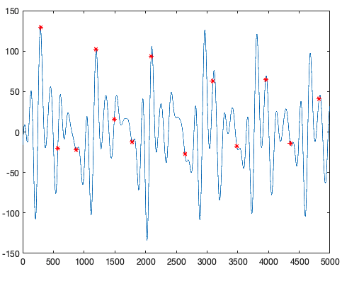
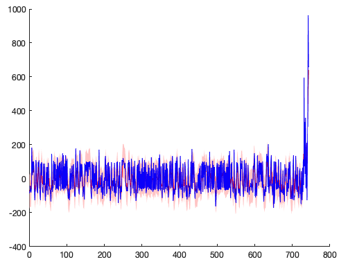
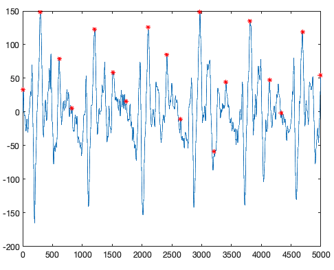

EEG-fMRI Ballistocardiogram Cleaning (Rodriguez method)
Please cite Rodriguez (2016)
Reversed engineered code from Rodriguez (2016) for removal of the ballistocardiogram artifacts from EEG-fMRI data when the ECG fails to give a good signal. Cameron’s dissertation is included in this repository for transparency’s sake. This code requires Matlab and the Signal Processing Toolbox.
If you use this code, please cite:
Rodriguez, Cameron. (2016). Improvements to Simultaneous Electroencepalography-Functional Magnetic Resonance Imaging and Electroencepalographic Source Localization. PhD Thesis for the University of California, Los Angeles.
Removing the Ballistocardiogram with no ECG
Remove the MR gradient signal from the EEG using your favourite software (here we used FIMRIB’s EEG tools [Niazy et al., 2005] in EEGLAB [Delorme & Makeig, 2004] saved as a .set file).
Set up the paths to your data and change directories into the
srcdirdirectory. Change the path to suit your dataset.
srcdir = fullfile('/Volumes', 'Lynne_32G', 'EEG', 'src');
cd(scrdir)- Load the EEG run. Change to suit your dataset.
EEG = load('-mat', [srcdir 'BHBMEG007_20210511_040344_GR.set']);- Get the sampling rate. In the
.setfile, it is namedsrateand is an embedded structure ofEEG. This may differ depending on the software used to remove the MR gradient noise.
Fs = EEG.srateRemove remaining gradient artifact at beginning and cut off part when net was removed at the end by cropping the signal.
Restrict signal to channels included in Rodriguez 2016 for ballistocardiogram estimation (FT9 [EGI 67], TP9 [EGI 94], T7 [EGI 69], P7 [EGI 96], FT10 [EGI 219], TP10 [EGI 190], T8 [EGI 202], P8 [EGI 179]).
channels2keep = [67 94 69 96 219 190 202 179];
start = round(EEG.event(2).latency); % skip first TR as there is often gradient noise still in the signal
data = double(EEG.data(channels2keep, start:end) );
subplot(8,1,1), plot(data(1,1:1500))
subplot(8,1,2), plot(data(2,1:1500))
subplot(8,1,3), plot(data(3,1:1500))
subplot(8,1,4), plot(data(4,1:1500))
subplot(8,1,5), plot(data(5,1:1500))
subplot(8,1,6), plot(data(6,1:1500))
subplot(8,1,7), plot(data(7,1:1500))
subplot(8,1,8), plot(data(8,1:1500))
- Subtract mean from each channel.
data = data - mean(data,2)- Create mean left and right channels
Lmean = mean(data(1:4,:));
Rmean = mean(data(5:8,:));- Rereference channels
- Take the difference of Lmean and Rmean
LR = Lmean - Rmean;
plot(LR(35000:40000))
- Clean up output Step 10.1: LR mean Signal Conditioning/Filtering
- Filter series 1: Low Bandwidth
- 0.75 Hz 6th order Butterworth filter
- 10 Hz 12th order Butterworth filter
% Generate filters
LBW.highpass = designfilt('highpassiir', 'FilterOrder', 6, ...
'HalfPowerFrequency', 0.75, 'SampleRate', Fs)
LBW.lowpass = designfilt('lowpassiir', 'FilterOrder', 12, ...
'HalfPowerFrequency', 10, 'SampleRate', Fs)
% Filter Lmean
temp = filtfilt(LBW.highpass, Lmean);
Lmean_LBW = filtfilt(LBW.lowpass, temp);
% Filter Rmean
temp = filtfilt(LBW.highpass, Rmean);
Rmean_LBW = filtfilt(LBW.lowpass, temp);
% Filter again (only with the difference this time)
temp = filtfilt(LBW.highpass, (Lmean_LBW - Rmean_LBW));
LR_LBW = filtfilt(LBW.lowpass, temp);- Filter series 2: High Bandwidth
- 0.75 Hz 6th order Butterworth filter
- 50 Hz 12th order Butterworth filter
% Generate filters
HBW.highpass = designfilt('highpassiir', 'FilterOrder', 6, ...
'HalfPowerFrequency', 0.75, 'SampleRate', Fs)
HBW.lowpass = designfilt('lowpassiir', 'FilterOrder', 12, ...
'HalfPowerFrequency', 50, 'SampleRate', Fs)
% Filter Lmean
temp = filtfilt(HBW.highpass, Lmean);
Lmean_HBW = filtfilt(HBW.lowpass, temp);
% Filter Rmean
temp = filtfilt(HBW.highpass, Rmean);
Rmean_HBW = filtfilt(HBW.lowpass, temp);
% Filter again (only with the difference this time)
temp = filtfilt(HBW.highpass, (Lmean_HBW - Rmean_HBW));
LR_HBW = filtfilt(HBW.lowpass, temp);- Normalize Low Bandwidth Signal
- First take the first drivative
\[ x'[n] = \frac{d}{dn}x[n], \] where \(x[n]\) is the time domain representation of the LR mean signal
LR_LBW_diff = diff(LR_LBW)/(Fs);Then normalize the difference representation
\[ x'[n] = \frac{x'[n]}{\text{max}\|x'[n]\|}\]
LR_LBW_norm = LR_LBW_diff./max(abs(LR_LBW_diff));- Get the positive Shannon Energy envelope:
\[SEE[n] = -\bigg( \big< ( < x'_N[n], x'*_N[n] > ), log( < x'[n], x'*_N[n] > ) \big> \bigg)\]
when \(x'*_N\) is the complex conjugate. However, in most cases, this simplifies into real numbers as
\[SEE[n] = \big< x'[n]^2,\ln(x'_N[n]^2)\big>\]
LR_LBW_SEE = -((LR_LBW_norm.^2).*log(LR_LBW_norm.^2));
plot(LR_LBW_SEE(1:5000))
Step 10.2 : LR mean Peak Detection Round 1 – SEE
- Find peak SEE (Assumption of maximum of 120 beats per minute supine heart rate.)
beatspermin = 120;
prominence_factor = 0.1;
%[pks, locs] = findpeaks (LR_LBW_SEE, ...
% 'MinPeakProminence', prominence_factor, ...
% 'MinPeakDistance', (Fs/(beatspermin/60)));
[pks, locs] = findpeaks (LR_LBW_SEE, ...
'MinPeakDistance', (Fs/(beatspermin/60)));- Find local minima and maxima for each peak
range2plot = 1:5000;
t = 1:length(LR_LBW_SEE);
subplot(2,1,1)
plot(t(range2plot), LR_LBW_SEE(range2plot))
locs_small = locs(and(locs <= max(range2plot), locs >= min(range2plot)));
hold on
plot(t(locs_small), pks(and(locs <= max(range2plot), locs >= min(range2plot))), 'r*')
hold off
- Get local minima and maxima for SEE peaks
Tolerance of \(\pm200\) ms (don’t know if this is too much – QRS complex takes .2 seconds (~200 ms))
tol = 200;
for idx = 1:length(locs)
minloc = locs(idx) - tol;
if minloc < 1
minloc = 1;
end
maxloc = locs(idx) + tol;
if maxloc > length(LR_LBW_SEE)
maxloc = length(LR_LBW_SEE);
end
[tmp, loc_tmp] = findpeaks(-LR_LBW(minloc:maxloc));
tmp = -tmp;
if length(tmp) >= 1
minima.value(idx) = tmp(1);
else
minima.value(idx) = LR_LBW(locs(idx));
end
minima.loc(idx) = minloc + find(LR_LBW(minloc:maxloc) == minima.value(idx)) - 1;
[tmp, loc_tmp] = findpeaks(LR_LBW(minloc:maxloc));
if isempty(tmp)
tmp = 0;
end
if length(tmp) > 1
maxima.value(idx) = tmp(2);
elseif tmp == 0
maxima.value(idx) = max(LR_LBW(minloc:maxloc));
else
maxima.value(idx) = tmp(1);
end
maxima.loc(idx) = minloc + find(LR_LBW(minloc:maxloc) == maxima.value(idx)) - 1;
end- Compare values with average across all sets and flag all sets with at least one value greater than 1.5 standard deviations from mean.
- First the amplitude
threshstd = 1.5;
maxima.mean.value = mean(maxima.value);
maxima.std.value = std(maxima.value);
maxima2throw = or(maxima.value >= maxima.mean.value + (threshstd*maxima.std.value), maxima.value <= maxima.mean.value - (threshstd*maxima.std.value));
minima.mean.value = mean(minima.value);
minima.std.value = std(minima.value);
minima2throw = or(minima.value >= minima.mean.value + (threshstd*minima.std.value), minima.value <= minima.mean.value - (threshstd*minima.std.value));- Then the temporal distance from SEE peakmaxima.dist.value = abs(locs - maxima.loc);
maxima.dist.mean = mean(maxima.dist.value);
maxima.dist.std = std(maxima.dist.value);
maximadist2throw = or(maxima.dist.value >= maxima.dist.mean + (threshstd*maxima.dist.std), maxima.dist.value <= maxima.dist.mean - (threshstd*maxima.dist.std));
minima.dist.value = abs(locs - minima.loc);
minima.dist.mean = mean(minima.dist.value);
minima.dist.std = std(minima.dist.value);
minimadist2throw = or(minima.dist.value >= minima.dist.mean + (threshstd*minima.dist.std), minima.dist.value <= minima.dist.mean - (threshstd*minima.dist.std));- And now temporal distance between minma and maximamaximaminima.dist.value = abs(maxima.loc - minima.loc);
maximaminima.dist.mean = mean(maximaminima.dist.value);
maximaminima.dist.std = std(maximaminima.dist.value);
maximaminimadist2throw = or(maximaminima.dist.value >= maximaminima.dist.mean + (threshstd*maximaminima.dist.std), maximaminima.dist.value <= maximaminima.dist.mean - (threshstd*maximaminima.dist.std));- Now discard any peaks locations that are outside 1.5 standard deviations from the meanpeaks2throw = (maxima2throw + maximadist2throw + maximaminimadist2throw + minima2throw + minimadist2throw > 0);
maxima.thresh.value = maxima.value(~peaks2throw);
maxima.thresh.loc = maxima.loc(~peaks2throw);
minima.thresh.value = minima.value(~peaks2throw);
minima.thresh.loc = minima.loc(~peaks2throw);
% Now plot them
plot(t(range2plot), LR_LBW(range2plot))
hold on
locs_small = locs(and(locs <= max(range2plot), locs >= min(range2plot)));
plot(t(locs_small), LR_LBW(and(locs <= max(range2plot), locs >= min(range2plot))), 'r*');
plot(t(maxima.thresh.loc(and(maxima.thresh.loc <= max(range2plot), maxima.thresh.loc >= min(range2plot)))), maxima.thresh.value(and(maxima.thresh.loc <= max(range2plot), maxima.thresh.loc >= min(range2plot))), 'g*')
plot(t(minima.thresh.loc(and(minima.thresh.loc <= max(range2plot), minima.thresh.loc >= min(range2plot)))), minima.thresh.value(and(minima.thresh.loc <= max(range2plot), minima.thresh.loc >= min(range2plot))), 'b*')
hold off
% clear all figures
clf- Remove any between peak distances with an interbeat interval greater than 1.5 seconds (~40 beats per min) and less than 0.5 seconds (~120 beats per minute).IBI.value = diff(minima.thresh.loc);
IBI.thresh1 = 1.5*Fs;
IBI.thresh2 = 0.5*Fs;
IBI2keep = and(IBI.value < IBI.thresh1, IBI.value > IBI.thresh2);- From the remaining IBI, take the maximum of the mean IBI minus 2 standard deviations or 0.5 seconds. This is the window for creating the ballistocardiogram template.IBI.thresh.value = IBI.value(IBI2keep);
IBI.thresh.mean = mean(IBI.thresh.value);
IBI.thresh.std = std(IBI.thresh.value);
IBIwindow = round(max(0.5*Fs, IBI.thresh.mean - (2*IBI.thresh.std)));- Compute average LR_LBW of IBIwindow size (like 'ERPs') centered on max peakIBI2keep4minima = logical([IBI2keep 0]);
minima.thresh.valueIBI = minima.thresh.value(IBI2keep4minima);
minima.thresh.locIBI = minima.thresh.loc(IBI2keep4minima);
if mod(IBIwindow,2) ~= 0
IBIwindow = IBIwindow - 1;
end
count = 1;
for i = 1:length(minima.thresh.locIBI)
minloc = minima.thresh.locIBI(i) - IBIwindow/2;
maxloc = minima.thresh.locIBI(i) + IBIwindow/2;
if minloc < 1 | maxloc > minima.thresh.locIBI(end) - IBIwindow/2;
continue
end
template.matrix(count,:) = LR_LBW(minloc:maxloc);
count=count+1;
end
template.mean = mean(template.matrix);
template.std = std(template.matrix);- Compute BCG window.
Add path to the bounded line package. The bounded line package can be downloaded from [here](https://github.com/kakearney/boundedline-pkg/). Change path to fit your data. addpath('~/Documents/MATLAB/kakearney-boundedline-pkg-8179f9a/boundedline/')
addpath('~/Documents/MATLAB/kakearney-boundedline-pkg-8179f9a/catuneven/')
addpath('~/Documents/MATLAB/kakearney-boundedline-pkg-8179f9a/Inpaint_nans/')
addpath('~/Documents/MATLAB/kakearney-boundedline-pkg-8179f9a/readmeExtras/')
addpath('~/Documents/MATLAB/kakearney-boundedline-pkg-8179f9a/singlepatch/')boundedline(1-IBIwindow/2:1+IBIwindow/2, template.mean, template.std, 1-IBIwindow/2:1+IBIwindow/2, repmat(0, 1, length(template.std)), 0, 'r-')
uthr = template.mean + template.std;
lthr = template.mean - template.std;
centre = IBIwindow/2+1;
cutoff = find(uthr < 0);
mindistance = max(cutoff) - min(cutoff);- Get cross correlations for each time window lag in data
lngX = length(LR_LBW);
lngY = length(template.mean);
assert(lngX >= lngY);
lags = 0:(lngX-lngY);
for i = lags
c(i+1) = xcorr(LR_LBW(i+1:i+lngY) - mean(LR_LBW(i+1:i+lngY)), template.mean - mean(template.mean),0,'coeff');
end
clf
plot(lags(range2plot),c(range2plot));
xlabel('lags'); title('normalized cross-correlation');
[pks2, loc2] = findpeaks(c, 'MinPeakDistance', mindistance);
qpkloc = loc2 + (maxima.thresh.loc(1) - loc2(1));
plot(LR_LBW(1:5000))
hold on
plot(qpkloc(and(qpkloc <= max(1:5000), qpkloc >= min(1:5000))), LR_LBW(qpkloc(and(qpkloc <= max(1:5000), qpkloc >= min(1:5000)))), 'r*')
hold off
- Cross correlation error checking
meanIBI = movmean(diff(qpkloc),4) - mean(diff(qpkloc)); % center the data
deviationIBI = diff(qpkloc) - mean(diff(qpkloc));
clf
boundedline(1:length(meanIBI), meanIBI, 100, 'r-', 1:length(meanIBI), deviationIBI, 0, 'b-')
Find the deviations greater than and less than a 100 ms (0.1 second) window around moving average
qpkloc_new = qpkloc;
deviationIBIlocs = find(deviationIBI > meanIBI + 100 | deviationIBI < meanIBI - 100);
if ~isempty(deviationIBIlocs)
disp('There are deviations outside threshold');
if length(deviationIBIlocs) >= 1
bipolar = find(diff(deviationIBIlocs) == 1);
if ~isempty(bipolar)
for pk = 1:length(bipolar)
[tmp3, loc3] = findpeaks(c(qpkloc(deviationIBIlocs(pk))-100:qpkloc(deviationIBIlocs(pk))+100));
if isempty(tmp3)
continue
else
[m,idx] = max(tmp3);
qpkloc_new(deviationIBIlocs(pk)) = qpkloc(deviationIBIlocs(pk)) - 100 + loc3(idx);
% Done 2018/12/11 -- TODO: SHIFT PEAK POINT IN qpkloc to largest local peak in cross correlation signal
end
end
end
end
end- Apply timing to larger bandwidth
[HBWpks, HBWlocs] = findpeaks(LR_HBW, 'MinPeakDistance', mindistance);
temp = ismembertol(HBWlocs, qpkloc, 20, 'DataScale', 2); % put 0.01 second tolerance on match (although Rodriguez's dissertation doesn't specify what is meant by 'near') <-- this is obviously wrong as it takes a vector of 900 and reduces it to 37. Still need to figure this one out.
SPpeaks = HBWlocs; % HBWlocs(temp);
plot(1:length(LR_HBW(range2plot)), LR_HBW(range2plot), SPpeaks(ismember(SPpeaks, range2plot)), LR_HBW(SPpeaks(ismember(SPpeaks, range2plot))), 'r*')
- Save to text file that needs minimal modifcations to be imported into EEGLAB
T = table([SPpeaks' + start - 1], [repmat('sppeak', length(SPpeaks), 1)], ...
'VariableNames', {'latency', 'type'});
writetable(T,[srcdir nom],'Delimiter','\t')- Do qrs cleaning in EEGLAB using the FIMRIB tools.